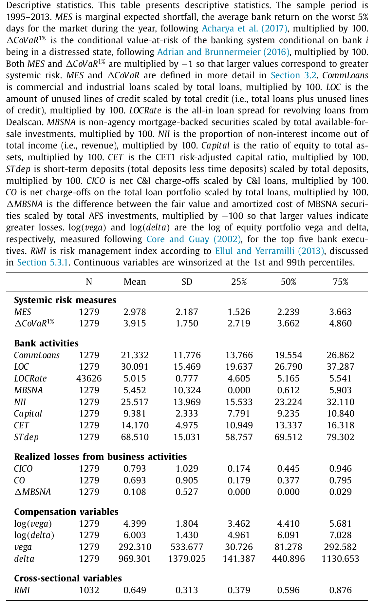
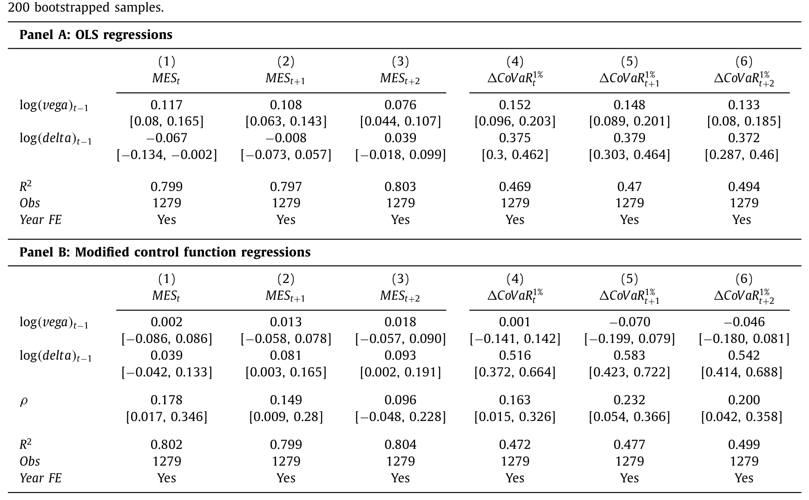
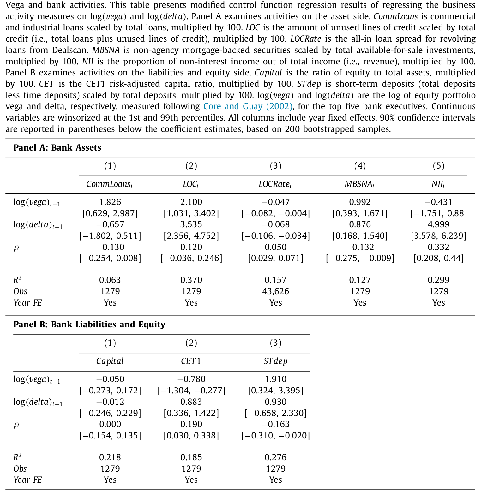
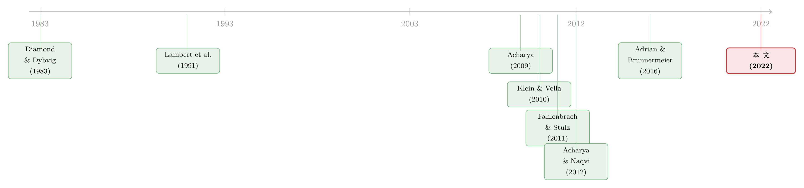

高管手里的「波动率期权」，为什么只在寒冬里咬人？
本文读的是 Armstrong, Nicoletti & Zhou (2022, JFE)：银行高管股权组合的 vega（薪酬价值对股价波动率的敏感度）会推高银行的系统性风险——但这种风险有个古怪的脾气，它只在经济收缩期发作，在扩张期几乎看不见。作者用一种无需工具变量的「修正控制函数回归」处理了银行与高管的内生匹配，发现简单 OLS 看到的那条正相关，相当一部分其实是匹配带来的假象；真正的因果效应，藏在一个跟着商业周期开关的「定时」机制里。
1 一张让人心里一紧的图
先讲一个画面。
把 2007–2009 金融危机爆发前（2005、2006 两年）每家银行高管的 vega 算出来，按五分位排好，然后看两件事：一是这家银行在危机里拿了多少 TARP（问题资产救助计划）救助款——用 2007 年的股权市值做标准化；二是它从 2007 年 6 月到 2008 年 12 月，股权市值蒸发了多少。
结果是一条几乎笔直向上的关系：危机前 vega 越高的那一组银行，危机里拿的救助款越多，市值跌得也越狠。两条线，一条比一条触目惊心。

Table 1
这就是全文的「钩子」。它太像一个因果故事了——高管的薪酬合约里塞进了鼓励冒险的凸性payoff，于是他们把银行开成了一架在顺风时狂飙、逆风时解体的机器。监管者显然也是这么想的：《多德-弗兰克法案》(Dodd-Frank Act) 第 956 条，被认为是整部法案的核心之一，专门授权银行监管者去限制那些「鼓励过度冒险」的高管薪酬做法。
但凡这条政策要有效，它必须依赖一个前提：薪酬合约真的对银行风险有因果作用，而不只是「碰巧」和风险长在一起。
于是，一个自然的问题来了：这条向上的线，到底是因果，还是相关？
2 难就难在「谁配谁」
要识别 vega 对系统性风险的因果效应，最大的拦路虎是内生匹配 (endogenous matching)：银行和高管不是随机配对的。
想冒险的银行，会去找愿意冒险、也能从冒险里赚到钱的高管；而董事会给高管设计多大的 vega，本身又取决于这家银行打算做什么生意。换句话说，vega 和那些「直接影响银行冒险活动、却又很难观测和控制」的银行/高管特征纠缠在一起。你在回归里看到的正相关，可能根本不是「vega 推高了风险」，而是「爱冒险的银行同时挑了高 vega 的高管、又干了高风险的生意」。
通常对付内生性，第一反应是找工具变量 (instrumental variable, IV)。但在这个场景里，IV 极难成立：你需要一个变量，它影响 vega，却同时对银行和高管两边的特征都外生。可 vega 是银行和高管共同「谈」出来的，几乎任何能撬动它的东西，都很难说服别人它跟双方的特征无关。排他性约束 (exclusion restriction) 在这里近乎无解。
这就是这篇论文真正出彩的地方——它没有去硬找工具变量。
3 关键一步：让「异方差」替你做识别
作者搬来了 Klein and Vella (2010) 的一套方法，称之为修正控制函数回归 (modified control function regression)。它的妙处在于：不需要工具变量。
先把基准设定写清楚。论文估计的是：
$$ Risk_{i,t+s} = \delta_{t+s} + \beta_1 \log(vega)_{i,t-1} + \beta_2 \log(delta)_{i,t-1} + \eta_{i,t+s}. $$
这里 \(Risk_{i,t+s}\) 是银行 \(i\) 在 \(t+s\) 年（\(s=0,1,2\)，即一到三年后）的系统性风险或某项具体活动；\(\log(vega)\) 是五名薪酬最高的高管股权组合的 vega 取对数（股价波动率每变动 0.01、组合风险中性价值的变化）；\(\log(delta)\) 是对应的 delta（股价每变动 1%、组合价值的变化），作为控制项；\(\delta_{t+s}\) 是年度固定效应。
问题出在误差项 \(\eta\) 和 \(vega\) 相关。作者用一个极其干净的式子点破了 OLS 偏误的来源——把 vega 上的 OLS 系数拆开：
直觉是这样的：假设你拿两个不同的银行子样本（比如经营市场不同）分别跑回归，如果两组残差的方差 \(\sigma_u/\sigma_x\) 差别很大，而内生性又很严重（\(|\rho|\) 很大），那么这两组估出来的 \(\beta\) 就应该明显不同——因为偏误项 \(\rho\,\sigma_u/\sigma_x\) 的大小跟着方差一起变。
反过来，如果残差方差明明差很多，两组的 \(\beta\) 却差不多，那只能说明 \(|\rho|\) 很小、内生性其实不严重。Klein 和 Vella 正是抓住这一点：利用残差里的异方差 (heteroskedasticity)，构造出一个控制函数，把那段 \(\rho\,\sigma_u/\sigma_x\) 的偏误「减掉」，从而在没有工具变量的情况下，逼近平均处理效应 \(\beta_0\)。
这套方法天然契合这个研究场景——既然找不到一个对银行和高管都外生的工具，那就干脆不找，转而向残差的异方差结构借力。
一句话记住它和 IV 的区别：IV 需要你从外部塞进一个外生变量；控制函数则是从误差项内部的异方差里榨出识别力。前者要排他性约束，后者要异方差性。
4 反转：OLS 看到的，大半是幻觉
方法到位，结果就开始有意思了。
首先，用两个最主流的市场化系统性风险度量——边际期望损失 MES（marginal expected shortfall, Acharya et al., 2017）和 ΔCoVaR（Adrian and Brunnermeier, 2016）——跑 OLS：vega 和银行一、二、三年后的 MES、ΔCoVaR 都呈显著正相关。和那张危机图一脉相承，看起来铁证如山。
接着，换成修正控制函数回归。结果一下子翻了脸：vega 和 MES、ΔCoVaR 之间，再也找不到任何关系。

Table 2
这个对比本身就是一个结论：OLS 那条向上的线，至少有相当一部分来自银行与高管的内生匹配，而非 vega 的因果推动。如果文章到此为止，故事就成了「薪酬冒险论是个相关性假象」——这反而会给监管泼一盆冷水。
但真正关键的一步在于，作者没有停在这个零结果上，而是追问：会不会是风险的「时机」被平均掉了？
Acharya and Naqvi (2012) 有一个模型：冒险在扩张期往往表现为「过度放贷」（信贷宽松时把钱借给更边缘的借款人），这些行为在当下看不出问题，要等到收缩期才把危机的种子兑现成损失。按这个逻辑，冒险激励对系统性风险的效应，可能只在经济收缩期才显现。
于是反转出现：作者把样本按商业周期切开，再跑控制函数回归——
- 在扩张期：vega 和 MES、ΔCoVaR 依然没有关系；
- 在收缩期：vega 和系统性风险出现显著的正相关。
这才是全文的核心：高管手里那份奖励波动率的「期权」，并不是时时刻刻在咬人。它平时蛰伏，把风险一点点埋进资产负债表；只有当经济转入寒冬，这些风险才集中兑现，咬上一口。把扩张期和收缩期混在一起跑，正负相抵，难怪 OLS 那种「时时显著」的图景反而是误导。
5 风险是怎么被「埋」进去的
光说系统性风险上升还不够。作者的第二组检验，是把 vega 和具体的银行活动逐项对上，看风险究竟从哪些缝隙渗进来。
资产端，vega 越高的银行： - 在贷款组合里投放更高比例的工商业贷款 (C&I loans)； - 在可供出售投资组合里持有更高比例的非机构抵押支持证券 (non-agency MBS, MBSNA)； - 发放更多的授信额度 (lines of credit)——而且利率更低。
这些活动有一个共同标签：强顺周期 (procyclical)。它们在好年景里回报丰厚，却会在收缩期集中暴雷。
负债与权益端，vega 越高的银行： - 更依赖短期存款 (short-term deposits) 这类「易挤兑 (run-prone)」的融资； - 维持更低的普通股一级资本 (CET1) 比率。
更少的资本垫、更短的负债期限——这正是流动性冲击下最容易被挤兑、最容易倒下的组合（Diamond and Rajan, 2011; Allen et al., 2012）。

Table 4
把这两组拼起来，故事就闭环了：vega → 鼓励顺周期、易挤兑的放贷与融资 → 这些活动在收缩期集中兑现损失 → 系统性风险上升。作者还专门验证了最后一环：vega 越高的银行，在随后的收缩期里，在 C&I 贷款、整体贷款组合、MBSNA 投资上遭受大额损失的概率确实更高。
这里有一个容易被忽略的微妙之处：银行的资本充足要求反而可能在帮倒忙。论文给出了「风险瞄准 (risk targeting)」(Keppo and Korte, 2018) 的解释——危机前 MBSNA 和 C&I 的资本要求差不多，但 MBSNA 风险更高、危机前回报也更高。于是高 vega、又受到强风控约束的银行，有动机从 C&I「平移」到 MBSNA：在不必多占资本的前提下，把风险偷偷加上去。监管的资本要求，本意是约束风险，却被冒险激励钻了空子。
为什么薪酬能放大系统性风险，而不只是单家银行的风险？作者搬出了一条理论线索：薪酬合约不仅直接激励某位高管冒险，它公开、可见，因此还充当了一种「承诺机制」——别家银行的高管能据此推断你会去冒什么险，从而做出相关的 (correlated) 决策，强化了银行间冒险的战略互补性 (strategic complementarities)。一家的风险上升，会抬高所有家一起冒同类险的概率，这正是系统性风险的来源（Acharya, 2009; Farhi and Tirole, 2012）。（关于薪酬合约如何被用作协调彼此行为的「承诺」，可参见《把「合谋」写进高管的工资条：当反垄断的门悄悄关上》；关于「大家一起冒同一种险」的系统脆弱性，也可对照《当所有银行都去猜同一张考卷：压力测试与系统的「单一栽培」》与《异质性，反而是金融体系的「稳定器」？》。）
6 数据
- 样本：美国商业银行，时间跨度
1995–2016。 - 观测单位：银行-年。
- 核心自变量：五名薪酬最高的高管股权组合的 vega 与 delta。Black-Scholes 参数沿用 Core and Guay (2002)、Armstrong and Vashishtha (2012) 的标准做法——年化波动率用过去 60 个月（至少 12 个月）连续复利月收益率算、并在 5%/95% 分位缩尾；无风险利率按期权剩余期限插值的国债利率乘 0.70（反映提前行权）；股息率用过去 12 个月股息除以月初股价。
- 因变量：系统性风险用 MES 与 ΔCoVaR；具体活动用 C&I 贷款占比、MBSNA 占比、授信额度、短期存款、CET1 比率等。
- 风控代理：用 Ellul and Yerramilli (2013) 的风险管理指数
RMI。
值得一提的是 \(s=0,1,2\) 的设计：系统性风险是个「低频」变量，它的负面兑现可能要在足够长的窗口里才看得见——作者把这比作资产定价里的「peso problem」(Krasker, 1980)。所以他们刻意看一到三年后的风险，而非沿用大多数研究的一年后。
7 文献脉络
这条研究有三股线在这里汇流。
第一股，是高管薪酬与冒险。 早期一派认为期权的期望payoff随波动率上升，所以用期权给高管发薪会鼓励冒险（Smith Jr. and Watts, 1982; Smith and Stulz, 1985）；另一派则指出，被禁止对冲的、不分散的高管，并不会按风险中性价值看待手里的期权，而是打折看待（Lambert et al., 1991; Carpenter, 2000; Ross, 2004; Lewellen, 2006）。从这套讨论里，分离出了 vega（对波动率敏感、明确鼓励冒险）和 delta（对股价敏感、方向上模糊）这对概念。
第二股，是系统性风险的理论。 一支讲战略互补性：Acharya (2009) 说银行为避免同行倒闭的负外部性而做相关投资，Farhi and Tirole (2012) 说对救助的预期会让大家一起加杠杆；另一支讲传染：从 Diamond and Dybvig (1983) 的挤兑，到 Allen and Gale (2000) 的网络传染、Allen et al. (2012) 的共同持仓+短债。
第三股，是把前两股接起来的实证。 Houston and James (1995)、Chen et al. (2006)、Fahlenbrach and Stulz (2011)、DeYoung et al. (2013) 等开始研究银行高管薪酬与冒险，但结论混杂，且大多盯着系统性或异质性风险，没有显式地检验薪酬如何通过具体活动催生系统性风险。Acharya and Naqvi (2012) 给了「风险在收缩期才兑现」的理论开关。

本文站在三股线的交汇点，又添了一件方法上的兵器——把 Klein and Vella (2010) 的控制函数法引入薪酬-风险研究，绕开了几乎找不到的工具变量，第一次相对干净地把「薪酬的因果作用」从「银行与高管的内生匹配」里剥离出来，并指出这种因果作用是跟着商业周期开关的。
8 评论与延伸（Q&A + 研究方向）
(a) 几个可能的疑问
Q：vega 和 delta 到底差在哪，为什么只盯 vega？
delta 是高管财富对股价的敏感度，vega 是对股价波动率的敏感度。delta 的激励方向是模糊的：它一方面鼓励经理去做正 NPV 项目（股价涨他受益），另一方面又放大了他对风险的厌恶（股价波动让他财富波动更大），两股力量相抵，方向是经验问题。vega 则无歧义地鼓励冒险，所以作者把它当主角，delta 只作控制。
Q：控制函数法真的能替代工具变量吗？会不会只是换了一组更隐蔽的假设？
它确实换了假设：IV 靠「排他性约束」，控制函数靠「残差的异方差结构」。后者在这个场景里更可信——因为银行经营市场不同，残差方差天然有差异——但它仍是假设，不是免费午餐。如果异方差本身就和结构误差以某种方式纠缠，识别同样会受污染。把它当成「比 OLS 更可信、但仍需异方差外生」的工具更稳妥。
Q：OLS 显著、控制函数不显著，会不会只是控制函数把真实效应也「洗」掉了，犯了过度修正？
这正是最该警惕的地方。零结果既可能是「内生性被剔除后真相浮现」，也可能是方法噪声太大、把信号一起吞了。作者的反驳证据在于：按商业周期切开后，收缩期又重新出现了显著正相关。如果是方法把信号洗没了，收缩期不该独独冒出来——这个异质性结果，反过来给方法的有效性背了书。
Q：为什么风险只在收缩期发作，这不是「事后诸葛」吗？
不是事后挑窗口，而是有前置理论（Acharya and Naqvi, 2012）：顺周期冒险在扩张期表现为「过度放贷」，账面上看不出问题，要到收缩期才兑现为损失。作者还独立验证了「高 vega→收缩期大额损失概率更高」这一环，使周期性不只是数据切片的产物。
Q：那张危机散点图（Fig. 1）能算证据吗？
只能算「动机」，不能算「识别」。它是危机前 vega 五分位与危机损失/TARP 的相关关系，没有处理任何内生性——作者自己也把它定位成 motivating evidence，真正的因果主张全靠后面的控制函数回归。
Q：对监管意味着什么？
一个略反直觉的政策含义：针对单家银行薪酬的微观审慎监管（如多德-弗兰克第 956 条），可能间接影响宏观审慎（系统性）风险。直接控制系统性风险通常不是微观审慎监管的明面目标，但本文说明，管住高管的薪酬合约，可以是抑制系统性风险的一条侧门。
(b) 几个可能的研究问题与提案
1. 把这套逻辑搬到公司债/信用市场。 【经济故事】银行高管的 vega 推高了 C&I 贷款与 MBSNA 的顺周期暴露，那么在公司债二级市场上，高 vega 银行作为做市商或持有人，是否在收缩期贡献了更剧烈的流动性枯竭？薪酬激励或许是「危机时谁先抽身」的一个被忽略的横截面解释。 【可行性】中。需要把 ExecuComp 的 vega 与 TRACE/做市商持仓、债券流动性度量对齐，识别上可沿用本文的控制函数法或银行层面的周期切分；难点在于把「高管激励」干净地映射到「交易台行为」。
2. 外资持有人会稀释还是放大这条机制？ 【经济故事】如果一家银行的债权/股权里有大量外资持有人，他们对本国救助预期、对薪酬合约这个「公开承诺」的解读可能不同，从而改变战略互补性的强度。外资占比高的银行，vega→系统性风险的传导是更强还是更弱？ 【可行性】中偏低。需要银行层面的外资持有数据（如 13F、跨境持仓），且外资占比本身高度内生，识别需要额外的外生冲击（如指数纳入、资本账户开放事件）。
3. 薪酬「公开性」作为承诺机制的直接检验。 【经济故事】本文的系统性风险渠道依赖「薪酬合约可见、可被同行推断」。那么薪酬披露规则收紧/放松的外生变化，应当改变战略互补性的强度——披露越透明，vega 的系统性外溢越强。 【可行性】高。可利用美国薪酬披露规则的若干次制度断点（如 2006 年披露改革）做事件研究/DiD，数据皆为公开的代理声明书与 ExecuComp，识别相对干净。
4. Dodd-Frank 之后，机制是否真的被掐住了？ 【经济故事】本文已给出 Dodd-Frank 前后 vega 对各项活动效应变化的描述性证据（如对 C&I 增强、对 MBSNA 减弱）。下一步是把它从描述升级为因果：第 956 条对不同银行的约束强度不同，可否构造处理强度做识别？ 【可行性】中。需要刻画各银行受 956 条约束的差异（资产规模门槛、薪酬结构差异），用强度型 DiD；难点是 Dodd-Frank 同时改了无数其他规则，干扰项极多。
9 我的判断
这篇文章最扎实的贡献，不在于「薪酬鼓励冒险」这个老结论，而在于它把一个被周期掩盖、被内生匹配污染的因果效应给挖了出来，并给出了一条「薪酬→具体顺周期活动→收缩期损失→系统性风险」的可追溯链条。方法上引入控制函数法、绕开难产的工具变量，是值得借鉴的一手；尤其是「OLS 显著、控制函数归零、再按周期切又复现」这个三段式，本身就是对识别策略最好的内部检验。
担忧也有三点。其一，控制函数法把识别力押在残差的异方差结构上，这个假设不像 IV 的排他性那样可被直觉审视，读者只能部分地信任；它的零结果与显著结果，都对方法设定相当敏感。其二，「具体活动」那组检验，作者自己也坦承是描述性的——风控实践 (RMI)、风险瞄准这些都内生于银行选择，不宜读成因果。其三，五名最高薪高管的组合 vega，是否能代表真正做出放贷、投资决策的中层风险承担者的激励，仍是个开放问题。
后续我最想看到的，是把「公开薪酬作为协调承诺」这条系统性渠道直接检验出来——目前它更多是理论叙述，而非被数据钉死的机制。如果能找到一个让薪酬可见性外生变动的设定，证明 vega 的系统性外溢确实随披露强度起伏，这条研究线才算真正落地。
参考文献
Acharya, V.V. (2009). A theory of systemic risk and design of prudential bank regulation. Journal of Financial Stability 5(3), 224–255.
Acharya, V.V., Naqvi, H. (2012). The seeds of a crisis: a theory of bank liquidity and risk taking over the business cycle. Journal of Financial Economics 106(2), 349–366.
Acharya, V.V., Pedersen, L.H., Philippon, T., Richardson, M. (2017). Measuring systemic risk. Review of Financial Studies 30(1), 2–47.
Adrian, T., Brunnermeier, M.K. (2016). CoVaR. American Economic Review 106(7), 1705–1741.
Allen, F., Babus, A., Carletti, E. (2012). Asset commonality, debt maturity and systemic risk. Journal of Financial Economics 104(3), 519–534.
Armstrong, C.S., Vashishtha, R. (2012). Executive stock options, differential risk-taking incentives, and firm value. Journal of Financial Economics 104(1), 70–88.
Carpenter, J.N. (2000). Does option compensation increase managerial risk appetite? Journal of Finance 55(5), 2311–2331.
Core, J., Guay, W. (2002). Estimating the value of employee stock option portfolios and their sensitivities to price and volatility. Journal of Accounting Research 40(3), 613–630.
DeYoung, R., Peng, E.Y., Yan, M. (2013). Executive compensation and business policy choices at US commercial banks. Journal of Financial and Quantitative Analysis 48(1), 165–196.
Diamond, D.W., Dybvig, P.H. (1983). Bank runs, deposit insurance, and liquidity. Journal of Political Economy 91(3), 401–419.
Diamond, D.W., Rajan, R.G. (2011). Fear of fire sales, illiquidity seeking, and credit freezes. Quarterly Journal of Economics 126(2), 557–591.
Ellul, A., Yerramilli, V. (2013). Stronger risk controls, lower risk: evidence from US bank holding companies. Journal of Finance 68(5), 1757–1803.
Fahlenbrach, R., Stulz, R.M. (2011). Bank CEO incentives and the credit crisis. Journal of Financial Economics 99(1), 11–26.
Farhi, E., Tirole, J. (2012). Collective moral hazard, maturity mismatch, and systemic bailouts. American Economic Review 102(1), 60–93.
Keppo, J., Korte, J. (2018). Risk targeting and policy illusions–evidence from the announcement of the Volcker rule. Management Science 64(1), 215–234.
Klein, R., Vella, F. (2010). Estimating a class of triangular simultaneous equations models without exclusion restrictions. Journal of Econometrics 154(2), 154–164.
Lambert, R.A., Larcker, D.F., Verrecchia, R.E. (1991). Portfolio considerations in valuing executive compensation. Journal of Accounting Research 29(1), 129–149.
Ross, S.A. (2004). Compensation, incentives, and the duality of risk aversion and riskiness. Journal of Finance 59(1), 207–225.
Smith, C.W., Stulz, R.M. (1985). The determinants of firms' hedging policies. Journal of Financial and Quantitative Analysis 20(4), 391–405.